Vertigo
Термины, правила, роли, дефолты, ретейки, пост-плент, выходы, комбинации и бета-материалы
Термины и основы дефолта
Базовые понятия из первой лекции курса.
| Термин | Значение |
|---|---|
| Дефолт | Расположение игроков по карте во время обычного раунда. Часто играется для того, чтобы понять, как играет противник на карте или на каких-то её участках. |
| Кор (ядро) | Основная сила команды: расположение 3+ игроков, которые играют вместе. |
| Зоны карты | Места на карте, контроль которых в данном раунде и в данный игровой момент даёт преимущество. |
| 3-1-1 (цифры) | Количество игроков под точкой А, на миду и на точке Б (очерёдность зависит от карты). На Vertigo это Б-Мид-А. |
| Контакт | Движение до первого столкновения с противником, при котором издаётся минимум шума и не используются гранаты. |
| Люрк | Игрок, отвечающий всегда за свою зону на карте. Если команда выходит через его зону, он чаще всего выходит первым. Если команда играет через другую зону — закрывает спину тиммейтам или играет в спину противникам через свою зону. |
| Микро | Умение контролировать своего персонажа: движение, аим, правильное использование гранат. |
| Макро | Умение понимать ситуацию в игре и принимать правильные решения: сыграть пассивно или агрессивно, быстро или медленно и т. п. |
Зачем нужен дефолт
Большинство хороших команд играют свои первые бай-раунды от дефолта, особенно если не знают, как играет соперник. Это проверенная временем тактика, чтобы не нарваться на задумки соперника. Качественные коллективы за счёт дефолта спокойно переигрывают многих соперников, ничего особо не выдумывая и не показывая скрытый пул своих заготовок.
Три элемента дефолта
Дефолт делится на три отрезка времени, у каждого своя задача:
- Старт. Собираем информацию и отжимаем зоны карты — получаем над ними контроль.
- Середина. Принимаем решение (мид-кол), куда идём дальше. Зону к этому моменту должны уже отжать либо в этот момент вести за неё борьбу.
- Конец. Постановка бомбы и пост-плент.
Типы дефолтов
Обычный
Играем спокойно, от информации, не торопимся, отжимаем всё под гранаты и работаем вместе. При необходимости реагируем по информации, отменяем план и выходим туда, где соперник предлагает минимальное сопротивление.
Пример: КТ показывают агрессию на миду — для этого нужно минимум 2–3 КТшника, поэтому мы просто быстро реагируем в точку, если у нас есть возможность.
Агрессивный
Задача — отжать какую-то зону. Даже получив информацию, что КТ дерётся за мид, принимаем этот файт и деремся за нужную зону: главное — навестись на голову быстрее, чем оппонент.
При этом грамотно используем гранаты и двигаемся, а не просто бежим +w. Мы делаем это с умом, у нас есть мысль на раунд, которую мы пытаемся реализовать.
Общие правила
Правила атаки
- Если у защиты нет AWP — играть контактнее, меньше кидаем смоков.
- На позднем тайминге, после разменов, играть через «центр карты» в контакт, без шума.
- Первым играет большинство (core).
- Люркеры должны контачить точки, если кор игроков плохо разменялся.
- Ставить бомбу под тиммейта или под зону, из которой пришли.
- Когда КТ начал дефать — считайте секунды.
- При заходе на точку следим за кучностью, останавливайте тиммейта, если он далеко ушёл.
- Считать смоки, которые тратит КТ.
Правила защиты
- Последний смок всегда на бомбу.
- Ситуации 2в1 играть вместе.
- Первым играет большинство (на ретейк).
- Нужно что-то делать в меньшинстве: вместе пушить или стакать, в общем — рисковать.
- В большинстве нужно сыграть от зон, без особого риска, больше на чек / на стрейфе.
- Играем против +W чудаков: тратим все антираш-гранаты, пикаем в ответ на средних таймингах.
- Если под одной точкой агрессия, под другой надо играть на удержание и сейв.
видео в оригинале
Для большинства правил в оригинале есть видеопримеры.
Правила Vertigo
Атака T
1. Защита играет 2–3 под А и в начале кидает много гранат
Они постоянно находят энтри за наш счёт или не отдают рампу. Перестраиваемся и начинаем играть слоу, размениваем их смоки на наши.
- Под конец первого КТ-смока тратим свой первый; на их второй тоже можем потратить свой второй. Если каким-то образом они дадут третий, мы должны быть уже готовы к ретейку рампы (зависит от таймингов; если они плохо кинули, можно и подождать).
- Нужен смок + флешка на ретейк РАМПЫ.
- Пока размениваем смоки под А, необходимо работать под другими точками: сделать выпад на миду либо буст, замутить комбинацию под Б. При этом под А достаточно 1–2 игроков, можно просто дропнуть смок А-игроку.
2. Когда отжимаем рампу за атаку под А
Когда отжимаем рампу и готовим выход под А, необходим молик или 2 гранаты за цемент. Помнить об этом и сейвить / докупать гранаты для этого.
видео в оригинале
3. Если не хотите умирать против пистолетов на миду
Лучше падать вниз в респу как реакцию. Дальше поможет игрок с Б либо второй А.
видео в оригинале
Защита CT
1. Слушать звуки за КТ
Слушать количество шагов, играя хелпующим за КТ. Игрок стяжки или снайпер может послушать звуки в лифтах и собрать дополнительную информацию. В оригинале есть видео «дефолтная ситуация» и пример того, как атака может маскировать звуки.
видео в оригинале
2. Как происходит сбор информации под А
Собираем информацию под А (2–3 игрока): можно под флеш, можно контактом. Первый контакт ловит игрок с нормальным ганом и с дальней дистанции, можно на ктрл — почти всегда от него зависит, как пойдут размены.
Информацию собираем, когда:
- очень тихо и непонятно, где соперник;
- вас много под А и вы стоите афк — даже если соперник ждёт, вы можете хорошо подруинить ему выход и взять раунд;
- у вас меньшинство: либо гэмблить, либо сбор информации.
3. Нельзя драться соло «в кровь» за рампу
Неоправданный риск. Если вы играете один под А-рампой, значит, ваша команда делает какую-то идею под другой точкой. Вам стоит разыграть под своей точкой дефолт и играть на информацию, без суперрисков. В оригинале есть видео плохого и хорошего варианта.
видео в оригинале
4. Если атака делает СПЛИТ на миду (G2)
Игрокам под Б, которые скорее всего будут в этот момент отрезаны, нужно принять решение и выбить одну из зон: либо яму под Б, либо принять файт на миду, отдав Б-точку.
видео в оригинале
5. Б-опорнику
Нельзя играть за 1-ей или на дереве, если ты один на пленте, а хелпующий игрок делает активность на другом участке карты.
видео в оригинале
6. Если вы играете дефолт 2-1-2
Мид-игрок должен быть со стороны Б-плента — хелпа Б-опорнику.
7. Атака часто играет контактом мид либо Б
Отправляем нашего авапера, чтобы закрыл проблемную зону.
Позиции и зоны
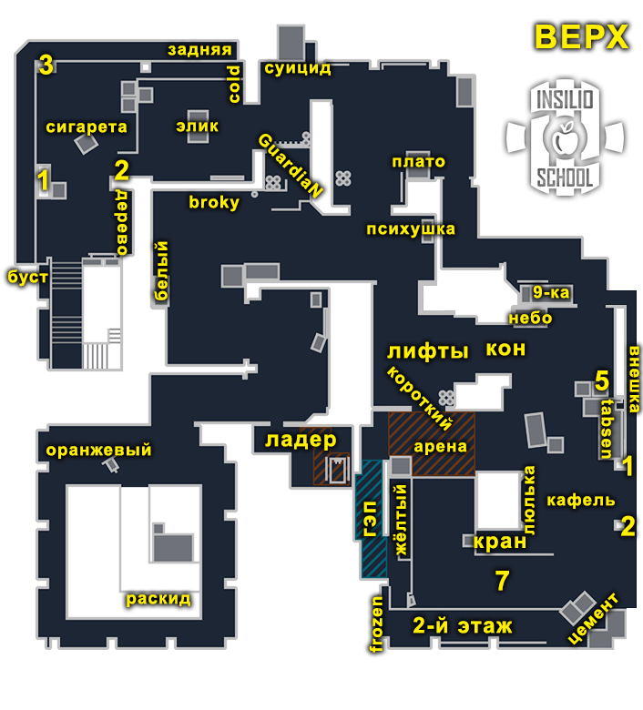
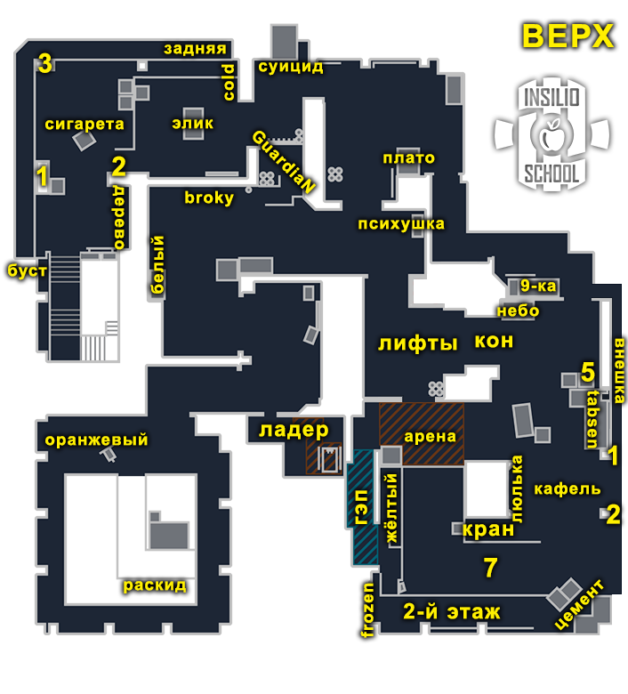
Названия позиций, которые встречаются в гранатах и лекциях: рамп, гэп (гап), мид, ладдер, раскид, цемент, коннектор (кон), лифты, плент, элик (элек), лобби, яма, дерево, сигарета, 1, 3, 5, 9, «стенка», «упор», «жёлтый», «крысюк».
Роли
Защита CT
Рамп (Brollan, EliGE, XANTARES)
Опорник А-рампы. Вы должны уходить последним, если не договорились об обратном. Откидываете антираш, нашиваете, общаетесь с гэп-игроком в начале раунда, просите гранаты от снайпера под вашу идею.
видео в оригинале
Гэп (Grim, Wicadia)
Отличие от рамп-игрока — у вас больше свободы, вы чаще оказываетесь на других участках карты. Вы всегда можете свапнуть споты в начале раунда или на позднем тайминге; не обязательно играть все раунды через гэп!
видео в оригинале
Мид (xertioN, EliGE, zont1x)
Контролируем мид, часто хелпуем Б-игроку и сетапимся с ним — это очень важно.
видео в оригинале
Б-опорник (magixx, Jimpphat, floppy)
Общаемся с мид-игроком, говорим, как играем (пассивно либо активно и в упор). Самый сложный спот на карте, поэтому активно смотрите демки на этой позиции, запоминайте реакции и решения топовых опорников.
видео в оригинале
AWP (sh1ro, jambo)
Большая вариативность. По дефолту вы хелпующий авик, который кидает гранаты под А и контролит мид. Но всегда есть функция сыграть гэп-рамп, забрать мид со старта или распикать Б по респе.
- Агрессивно на Б
- Агрессивно мид
- Агрессивно рамп
- Пассивно рамп
видео в оригинале
Атака T
Мид-игрок
Основная задача — контролировать пуш мида. Доигрывать люрком в мид либо играть в точку с командой.
AWP
Находить опены, забирать зоны, грамотно использовать гранаты, чтобы саппортить рифлам.
А-хелпующий
Колит и ведёт за собой снайпера; вместе с люркером точки формируют тройку. Чаще всего играет под А.
А-люрк
Собирать информацию под А, а также отжимать зоны. Может делать это с командой или в одиночку, но очень важно грамотно использовать гранаты. Также может доигрывать люрком под А.
Б-люрк
Собирать информацию под Б-точкой, не давать запушить точку. Отжимать Б-лобби, доигрывать люрком либо играть в точку с командой.
Видео-примеры игроков по ролям (Spinx, SunPayus, Snappi, Maden, mezii, flameZ, apEX) — в разделе «Бета-версии гайдов».
Дефолты
Дефолты атаки T
Дефолт 1-1-3
Один игрок контролирует Б-точку, один — мид. Тройка занимается рампой, разменивает гранаты, занимает зоны. Стараемся занимать жёлтый и отдавать молотов за цемент, контролируем агрессию от КТ, дальше заходим либо фейкуем.
Играть «смок на смок»: у КТ их меньше, учитывать это, чтобы не выкидывать свои смоки просто так. Играть под конец второго смока, если решили играть медленно.
- Большинство: X+1 — доиграть ситуацию, чтобы был люрк на разворот или на доигрыш через спину.
- Меньшинство: контактом пойти в точку и выйти под пару гранат.
видео в оригинале
Дефолт 3-1-1
Цель — быстро и железно отжать нижку (лобби) на Б, а дальше решить: оставить здесь одного игрока, а остальным пойти ретейкать рамп, либо выходить на Б.
- Большинство: доиграть ситуацию X+1, где 1 — люркер, который может развернуть команду на другую точку (при получении информации о перетяжке КТ / свободном пленте) либо помочь команде доиграть текущую, зайдя в спину КТ.
- Меньшинство: (1) контактом пойти в точку и выйти под пару гранат; (2) крутануть через мид, если есть информация, что там чисто или скорее всего чисто — поймать перетяжку либо попасть в хороший тайминг.
видео в оригинале
Дефолт 1-4
Четвёрка занимается рампой, соло-игрок может имитировать дефолт под Б, потом сыграть люрком (мид или Б); есть опция закончить пятым под А.
- Большинство: закончить А, не торопясь, всё отчекав.
- Меньшинство: (1) контакт А, пытаясь найти рандомные дуэли; (2) крутануть через мид при информации, что там чисто.
видео в оригинале
Дефолты защиты CT
2-1-2 (самая база)
Снайпер играет хелпующего, может дать смок либо флешку на врыв; если всё хорошо, то забирает мид. Один играет рамп, второй гэп. Опорник Б отыгрывает свой дефолт, мид-игрок откидывает свой антираш и саппортит опорнику Б. AWP может играть активно под А (гэп, рамп) — тогда хелпующим может сыграть игрок гэпа или иная роль.
Цель: отыграть все зоны, собрать информацию, где кор соперника.
План Б: укрепить одну из точек после сбора информации. Пример: на А тихо, опорник А прыгает-стрейфит и говорит, что под А чисто — укрепляем Б + мид.
видео в оригинале
1-1-3 (укреп А)
Снайпер играет хелпующего, далее забирает мид и играет ближе к Б, если на А тихо. Тройка активно играет под рампой, можно занимать глубже, чтобы получить пространство, можно имитировать занятие. Опорник Б играет издалека, чтобы его быстро не поймали.
Цель: получить пространство под А-точкой, законтрить агрессию Т под А (пример: играют дефолт 1-4).
План Б: отдать А, сыграть стак под Б либо прожать мид на информацию. Всё это делать, если у нас нет преимущества.
видео в оригинале
1-2-2 (укреп мида + быстрая хелпа Б)
Вариация, где мы укрепляем мид + иногда Б, а на А откидываем дефолт (смок + флеш, иногда молик), чтобы запутать соперника. А-игроки играют свой дефолт, но без лишней агрессии. Играется сетап на миду, Б-опорник играет издалека, чтобы ему успели хелпануть.
Цель: принять мид + Б, предугадать действия соперника (пример: соперник часто ходил в А либо часто играл сплит Б).
План Б: прожать мид на информацию.
видео в оригинале
Ретейк
Точка А
- Самое главное — отдавать смок на бомбу (не в гэп и не в рампу, особенно если он ластовый: обычно на ретейк остаётся 1 смок).
- Молотов всегда за цемент, если нет полной информации.
- Основная масса КТшников фокусит рампу, потому что 9 из 10 бомб ставят под рамп; гэп же можно контролить с плента либо отправить туда одного игрока, не более (кроме ситуаций, когда есть полная информация).
Точка Б
- Стараемся взорвать дефолт либо откинуть молик, чтобы задержать противника.
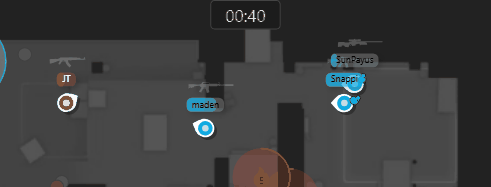
Ретейк Б: взорвать дефолт или откинуть молик - Играем от элика, врываем на раз-два, в идеале под флешку с лифтов (если нас много — с двух сторон от элика).
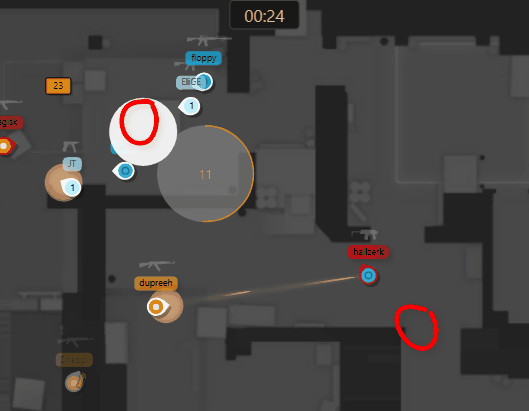
Ретейк Б: вход от элика - Первый смок на бомбу, второй смок можем потратить, чтобы отзонить рампу Б.
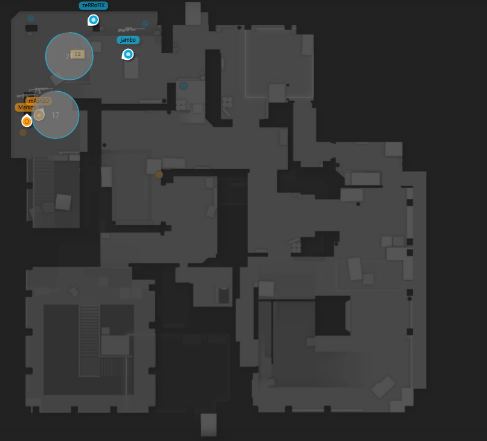
Ретейк Б: смоки на бомбу и на рампу Б - Дополнительные молики можем потратить за 3 либо за 1. За тройку отдаём, только если есть информация. За 1 отдавать приоритетнее либо в зону, где остался соперник. Пример: игрок атаки идёт с мида либо в рампе Б — мы просто закрываем их молотовым.

Ретейк Б: молотовы за 3 и за 1 - При ретейке Б очень сильно помогает игрок, который исполняет роль «противного» и играет в спину. Обычно это КТшник, который прожимает А, либо игрок, который крутит с мида.
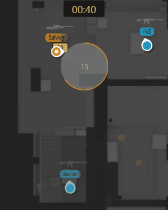
Ретейк Б: игрок в спину
Пост-плент
Позиции указаны в порядке приоритета для занятия.
Точка А
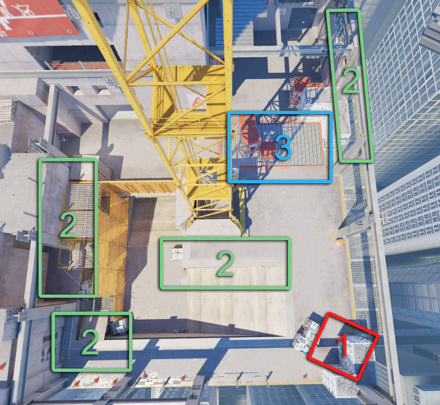
Точка Б
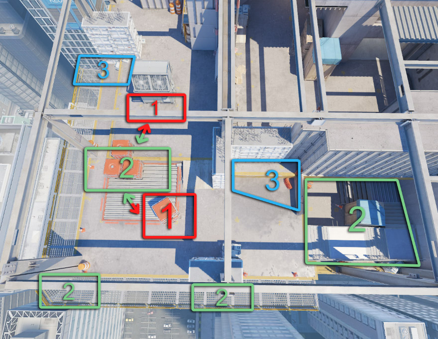
Выходы
Выход А T
Занимаем рамп, отдаём молотов за цемент. Дальше тратим смок в лифты + смок в плент. Большинство играет через рампу, меньшинство в гэпе (обычно 1 игрок). Действуем по контакту игроков с рампы, не летим вперёд. Отдаём молотов внешка, заходим всегда под 2 флешки: общая + под заход.
видео в оригинале
Выход Б T
Тратим молик на крысюк, отдаём смок лево + право, кидаем молотовы (единица, тройка, дефолт). Кидаем общую флешку, а также на заход.
видео в оригинале
Сплит Б T
Играем 1 (Б) — 4 (мид). Отдаём смок в лифты, всегда даётся энтри-флешка, чтобы подловить мид-игрока, и две флешки на заход («фишечные»), молотов + смок в КТ, чтобы не могли убить в спину. Игрок, который играет соло, не торопится и ждёт контакта от большинства, ловит опорника, который может отдавать Б-плент.
видео в оригинале
Расширенные разборы выходов (А по левой, А под 2 смока, Б, мид-Б G2) — в разделе «Бета-версии гайдов».
Комбинации
Комбинация — действия двух или более игроков, решающих определённую тактическую задачу в процессе игры. Благодаря комбинациям игра становится вариативнее: можно давать лёгкие фраги, спокойно отжимать важные зоны и побеждать в раундах. Здесь только базовые комбинации, проверенные временем и игроками; искать комбинации легко — достаточно смотреть демки.
За Т на А
Нико-мув под А T
Нужно, чтобы законтрили гэп и дал флешку мид-игрок. Ваша задача — фулл-фокусом убить КТшника слева от вас. Можно попросить отдать молик-смок в гэп. Всегда нужен саппорт, который прикроет гэп / 2 этаж в лейте, пока вы распикиваете лево.
видео в оригинале
Святые ХЕ рамп T
Базовый мув, работает и сейчас. КТ часто играют в рампе — отдаём в смок «на раз-два» ХЕ.
видео в оригинале
Флешка «База» T
Самая обычная флешка, необходимая для занятия рампы А. Используем её в том числе для ретейка в лейте.
видео в оригинале
Занятие под молик T
С мида летит молик + флеш, под это занимаем рамп, полностью отрезая гэп. Хорошо стакается с флешкой «База».
видео в оригинале
За Т на миду
Резкий мид T
Флешки, чтобы подловить сетап от КТ на миду. Отлично работает на форсе: можно бежать + стрелять, найти энтри и реализовать ган дальше.
видео в оригинале
Буст мид T
Основной буст, помогающий контролировать мид.
видео в оригинале
Один нашивает, другой слушает T
Мид-игрок шьёт с ладдера, а Б-игрок слушает результат нашива. На мид можно взять ещё напарника, чтобы тот потом сразу пошёл дальше.
видео в оригинале
Три буста на миду T
- На железе (деф)
- Под ящиком, почти в упор (деф)
- Бразильский — ран-буст на ящик
Таймкоды видео: 0:05 — буст на железе, 0:15 — под ящиком, 0:23 — бразильский ран-буст.
видео в оригинале
За Т на Б
Олеговский буст T
Энтри под Б, дальше доиграть.
видео в оригинале
Инста-буст дерево T
После того как резко отжали Б-яму, можно сразу сделать буст под дерево; обычно используется один раз за карту.
видео в оригинале
За КТ на миду
Укрепление мида CT
Формат из дефолта 2-2-1 — комбинация, чтобы принять раннюю агрессию на миду от атаки.
видео в оригинале
Второе укрепление CT
Вариация пассивнее, но с потенциалом быстрой хелпы Б; главное — правильно сесть. Игрок, который находится сверху, курирует игрока под ним.
видео в оригинале
Агрессивный сетап под AWP CT
Хороший вариант быстро найти энтри на миду, особенно против афк мид-игроков.
видео в оригинале
Лучшая флешка для мида от КТ CT
Этой комбинацией всегда собираем информацию по миду; хорошо работает после 1:20 (тайминг).
видео в оригинале
За КТ на Б
Б-шный ран-бустик CT
Виртуозный вариант; делать очень трудно, но если натренировать, можно удивить активного Б-игрока атаки — редко кто такое ожидает.
видео в оригинале
Форс-буст CT
Вариант реализовать 1–2 засейвленных гана.
видео в оригинале
Сбор информации под Б CT
Комбинация, чтобы зачистить Б-рамп и собрать информацию.
видео в оригинале
Старт 3 Б CT
Идея — законтрить дефолт-агрессию Б. Один игрок идёт в упор, доджит в тайминг флешку от Т; второй пикает и далее играет на размен. Задача третьего — сыграть в размен, если всё будет очень плохо. Есть вариант подкинуть ХЕ в ноги сопернику.
видео в оригинале
Сетап AWP + рифла под Б CT
Есть ещё более агрессивный вариант, где AWP по первой респе падает вниз.
видео в оригинале
За КТ на А
Буст в пленте А CT
Топовый вариант, если не успеваем прожать рамп для информации: играем от плента, и этот буст часто не ожидают. Главное — играть на 1–2 килла, не более; лучше сразу падать после первого и играть в пленте-лифтах.
видео в оригинале
Сбор инфы под А CT
Самый простой и сейвовый вариант под А, чтобы собрать информацию. КТ-сторона Vertigo — это про сбор информации.
видео в оригинале
Кран CT
Комба для энтри по свободному А-игроку.
видео в оригинале
Супер-база CT
Кто не делал этот буст — родителей в школу (цитата лектора).
видео в оригинале
3D-буст CT
Обычно делают на форсах, очень старый бустик.
видео в оригинале
Парные и соло комбинации бета-версии лекции (Испанский мув, буст слева, рефреш-мув, Немига и др.) — в разделе «Бета-версии гайдов».
Стрейфы и пики
Материал бета-лекции 3.1. У каждого движения в игре есть инерция: когда мы останавливаемся, персонажа немного несёт дальше, и если в этот момент начать стрелять, пуля улетит рандомно. Чтобы погасить инерцию, используем один из видов стрейфов.
1. Контрстрейф
Нужно просто вовремя нажать кнопку. Идём влево (A) — для контрстрейфа нажимаем вправо (D). Работает не только в стороны, но и вперёд/назад.
видео в оригинале
2. Микро-стрейфы
Самый сложный стрейф на дистанции, требует очень большой концентрации, но очень эффективен, особенно за КТ: вас сложнее убить, модель постоянно движется, и соперник при выходе легко промахивается — голова для него в движении.
видео в оригинале
3. Лонгстрейф
Широкий выход, очень эффективный против AWP; главное — не забывать в конце гасить скорость.
видео в оригинале
4. Хантарес-пик
Резкий выход с префаером на любую из позиций; главное — скушать инерцию.
видео в оригинале
5. Ax1le-дакшот
Пик с использованием Ctrl, но не до конца: мы как бы немного садимся, и соперник может наводиться как на игрока, который пикает на контре, но на самом деле мы пикаем стоя.
видео в оригинале
Пики против AWP
Против AWP стараемся выходить на широком либо делать выпады. В оригинале есть видео «как не надо» (на коротком) и «как надо» (на длинном).
видео в оригинале
Грамотный распик
Открываемся не под все позиции сразу: шанс убить больше, но главное — повышаем шанс выжить. Когда мало ХП и рядом есть спот, стараемся играть от головы — так повышаем шанс выжить и дать килл, принести импакт команде.
Риски при распиках
- Оружие. Чем хуже оружие, тем сложнее распикать некоторые споты.
- Время. Многие даже очень хорошие игроки не обращают на это внимания и начинают распикиваться, когда уже нужно выходить и рисковать. Команда вгоняет себя в таймер и может не успеть поставить бомбу или делает это в спешке в последней трети раунда.
- ХП (здоровье). Мало ХП — вылетаем вперёд на размен, создаём спейс команде и даём спокойно доиграть раунд.
Примеры распиков рампы и гэпа — в видео оригинала.
видео в оригинале
Записи лекций (таймкоды)
Записи основного курса. Видео в оригинале; в источнике доступны только оглавления с таймкодами. Часть таймкодов — организационные вопросы и ответы, они оставлены для полноты.
Лекция 1. Дефолт. Роли (запись от 19 октября)
| Время | Тема |
|---|---|
| 0:00 | Начало |
| 3:50 | Начало лекции |
| 4:24 | Почему вертиго? |
| 7:05 | Термины |
| 8:10 | Что такое дефолт |
| 8:53 | Три элемента дефолта |
| 11:35 | Типы дефолтов |
| 12:23 | Позиции |
| 13:18 | Дефолты атаки |
| 13:42 | Почему вертиго пикают реже и чьи демки на вертиго смотреть |
| 15:03 | Дефолт 1-1-3 |
| 19:03 | Дефолт 3-1-1 |
| 24:29 | Дефолт 1-4 |
| 28:04 | Дефолты защиты |
| 28:18 | Дефолт 2-1-2 (самая база) |
| 33:28 | Дефолт 1-1-3 (укреп А) |
| 36:10 | Дефолт 1-2-2 (укреп мида + быстрая хелпа) |
| 38:10 | Роли защиты |
| 38:16 | Рамп |
| 40:24 | Гэп |
| 41:41 | Мид |
| 43:08 | Б опорник |
| 44:01 | AWP (агрессивно на Б/миду/рампе, пассивно на рампе) |
| 45:44 | Роли атаки |
| 46:41 | Домашнее задание |
| 48:06 | Ответы на вопросы |
| 48:27 | "Может ли снайпер играть на люрке?" |
| 49:12 | Про мерч и форму |
| 50:34 | "Как играть если фейсит уже не рейтят?" |
| 51:10 | "Что если группа не полностью собрана?" |
| 51:20 | Много быстрых вопросов |
| 53:04 | "Как снайпер может играть за атаку?" |
| 54:12 | Про перезапуск школы |
| 55:01 | "Как должен играть капитан авик?" |
| 55:49 | "Каким образом организуются праки?" |
| 56:29 | "Что делать если на А за КТ промазал дым на рампу?" |
| 56:58 | Про занятие ладдера ктшниками |
| 59:20 | Как проходит практика |
| 1:00:29 | "Вторым снайпером стоит играть?" |
| 1:00:44 | Про видосы на сайте |
| 1:01:44 | Почему нельзя купить гайды и записи старых курсов |
| 1:02:55 | Когда будет школьный турнир |
| 1:03:30 | "Какая роль подходит тем, кто хочет меньше стреляться?" |
| 1:04:17 | "За КТ для занятия лучше давать смок в рампу или в гэп?" |
| 1:05:23 | "Дым кран не рейтится?" |
| 1:05:41 | Про смок в гэп/рампу, только теперь за атаку |
| 1:06:23 | "Как распределиться по карте, когда играешь фейсит втроем?" |
| 1:07:17 | Конец лекции |
Лекция 2. Ретейк. Пост-плент. Выход (запись от 26 октября)
| Время | Тема |
|---|---|
| 0:00 | Начало |
| 1:00 | Про тикеты и призы |
| 2:45 | Про будущие обновы |
| 3:40 | Второй слот у тренера |
| 4:40 | Начало лекции |
| 4:58 | Ретейк А |
| 5:50 | Смок на бомбу |
| 9:18 | Молотов за цемент |
| 10:41 | Как распределяться при ретейке А |
| 14:05 | Ретейк Б |
| 14:20 | Взорвать дефолт или откинуть молик |
| 16:33 | Играть от элека, врываться на раз-два |
| 18:58 | Первый смок на бомбу, второй - чтоб отзонить рампу |
| 20:23 | Давать молики за 3 или за 1 |
| 23:57 | Игрок в спине |
| 27:44 | Пост-плент |
| 28:12 | Точка А |
| 30:34 | Точка Б |
| 33:00 | Выходы |
| 33:20 | Выход А |
| 39:44 | Выход Б |
| 43:47 | Сплит Б |
| 49:12 | Домашнее задание |
| 50:07 | Ответы на вопросы |
| 50:58 | В чем мета на вертиго |
| 52:28 | Про капитанское обучение |
| 52:41 | Про смоки на Б |
| 53:00 | Как играть за атаку, если не выиграли первые 5 раундов |
| 55:19 | Будет ли курс по комментированию |
| 56:57 | Что важно при просмотре демок с хлтв |
| 58:34 | Какая лучшая позиция для соло фасика |
| 58:48 | Про молики на Б |
| 1:00:00 | Как лучше тренить механику |
| 1:01:40 | Как остановить чела в рампе |
| 1:03:10 | Как колить на кэпе и не проседать по стате |
| 1:04:47 | Тонкость при занятии элека |
| 1:05:57 | Как играть на роли капитана, когда летишь 4-10 |
| 1:08:40 | Конец лекции |
Лекция 3. Комбинации (запись от 2 ноября)
| Время | Тема |
|---|---|
| 0:00 | Начало |
| 2:14 | Начало лекции |
| 3:20 | Комбинации за Т на А |
| 3:40 | Нико мув под А |
| 5:18 | Святые ХЕ рамп |
| 6:05 | Флешка "База" |
| 6:52 | Занятие под молик |
| 8:01 | Комбинации за Т на Миду |
| 8:15 | Резкий мид |
| 9:46 | Буст мид |
| 10:40 | Один нашивает, другой слушает |
| 13:03 | Три буста на миду |
| 14:20 | Комбинации за Т на Б |
| 14:31 | Олеговский буст |
| 15:25 | Инста буст дерево |
| 17:30 | Комбинации за КТ на Миду |
| 17:58 | Укрепление мида |
| 19:05 | Второе укрепление |
| 20:40 | Агрессивный сетап под AWP |
| 22:12 | Лучшая флешка для мида от КТ |
| 24:25 | Комбинации за КТ на Б |
| 24:30 | Б-шный ранбуст |
| 25:10 | Форс буст |
| 25:33 | Сбор информации под Б |
| 27:04 | Старт 3 Б |
| 28:48 | Сетап AWP+Рифла под Б |
| 29:30 | Комбинации за КТ на А |
| 29:42 | Буст в пленте А |
| 30:30 | Сбор информации под А |
| 31:09 | Кран |
| 32:20 | Супер база |
| 32:33 | 3D буст |
| 33:32 | Домашнее задание |
| 34:10 | Ответы на вопросы |
| 35:41 | По поводу знакомств в киберспорте |
| 37:35 | Будет ли перерабатываться система топа школы |
| 39:38 | Про турнир |
| 40:34 | "Повторять карты в след. году планируется?" |
| 41:30 | Про вертиго на фейсите |
| 45:00 | Конец лекции |
Лекция 4. Общие правила. Правила Vertigo (запись от 9 ноября)
| Время | Тема |
|---|---|
| 0:00 | Начало |
| 1:21 | План школы до конца года |
| 3:17 | Видео с zorte |
| 5:57 | Начало лекции |
| 6:50 | Правила атаки |
| 7:00 | #1 Если у защиты нет AWP - играть контактнее, меньше кидаем смоков |
| 7:40 | #2 На позднем тайминге, после разменов, играть через "центр карты" в контакт, без шума |
| 9:50 | #3 Первым играет большинство (core) |
| 11:54 | #4 Люркеры должны контачить точки, если кор игроков плохо разменялся |
| 12:30 | #5 Ставить бомбу под тиммейта или под зону из которой пришли |
| 13:42 | #6 Когда КТ начал дефать - считайте секунды |
| 15:16 | #7 При заходе на точку следим за кучностью, останавливайте тиммейта, если он далеко ушёл |
| 16:34 | #8 Считать смоки, которые тратит КТ. |
| 17:09 | Правила защиты |
| 17:20 | #1 Последний смок всегда на бомбу |
| 18:48 | #2 Ситуации 2в1 играть вместе |
| 19:42 | #3 Первым играет большинство (на ретейк) |
| 20:02 | #4 Нужно что-то делать в меньшинстве, вместе пушить или стакать, в общем рисковать |
| 21:05 | #5 В большинстве нужно сыграть от зон, без особого риска больше на чек/на стрейфе |
| 22:14 | #6 Играем против +W чудаков, тратим все антираш гранаты, пикаем в ответ на средних таймингах |
| 23:53 | #7 Если под одной точкой агрессия, под другой надо играть на удержание и сейв |
| 25:30 | Правила Vertigo. Атака |
| 25:42 | #1 Защита играет 2-3 под А и вначале кидают много гранат |
| 30:35 | #2 Когда отжимаем рампу за атаку под А |
| 31:45 | #3 Если не хотите умирать против пистолетов на миду |
| 32:23 | Правила Vertigo. Защита |
| 32:30 | #1 Слушать звуки за КТ |
| 34:45 | #2 Как происходит сбор информации под А |
| 38:18 | #3 Нельзя драться соло в кровь за рампу |
| 39:31 | #4 Если атака делает СПЛИТ на миду (G2) |
| 41:39 | #5 Б-опорнику |
| 42:32 | #6 Если вы играете дефолт 2-1-2 |
| 43:02 | #7 Атака часто играет контактом мид, либо Б |
| 43:38 | Домашнее задание |
| 44:00 | Ответы на вопросы |
| 44:36 | Почему эта лекция была последней |
| 45:17 | Когда и как проходит розыгрыш за тикеты |
| 45:47 | Про курсы капитанов, менеджеров и комментаторов |
| 46:37 | Как работает скидка за топ тренера по приросту эло |
| 46:55 | Когда начнется следующий курс |
| 47:31 | Про нововведения (рейтинг) |
| 47:57 | Еще про обучение комментаторов |
| 49:21 | Про следующую карту (саму карту не назовут) |
| 49:57 | Когда будут футболки |
| 50:57 | Если меняешь тир - меняется твой тренер? |
| 51:20 | Повторяющиеся вопросы |
| 56:20 | Кто будет вести лекции на следующем курсе |
| 57:24 | Конец лекции |
Бета-версии гайдов
Материалы первого (бета) потока школы (февраль–апрель 2024). Они пересекаются с основным курсом; здесь собрано то, что отличается или отсутствует выше.
Позиции и зоны (бета)

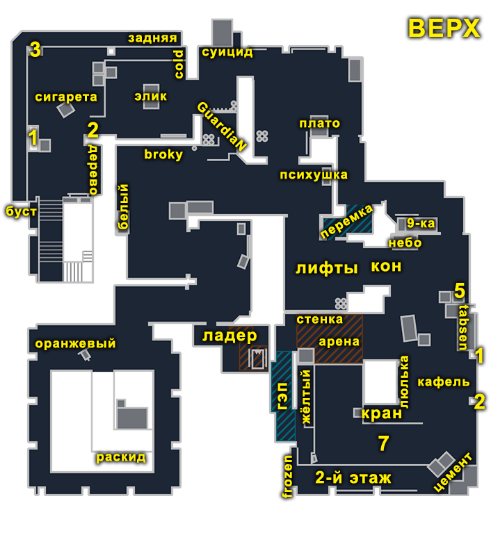
Дефолты (бета-лекция 1)
Отличие в терминах: «3-1-1 — количество игроков под точкой Б, на миду и на точке A (очерёдность зависит от карты)»; термин «Люрк» в бета-версии не выделен.
Дефолт 1-1-3
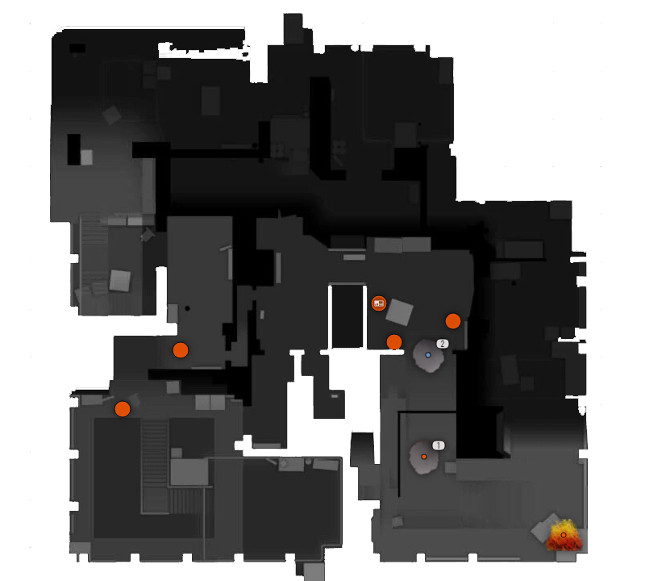
Слоу-дефолт: по одному человеку смотрят мид и Б, тройка играет на рампе. Рамп лучше не рашить, а играть от ситуации. Идеал — отжать рамп, jks и дать молик цемент. Играть «смок на смок»: у КТ их меньше. Под конец 2-го смока играть, если решили играть слоу и умираете на первых таймингах на рампе. Мидер и Б-шник стоят афк.
- Большинство: X+1, где 1 — люркер, способный развернуть команду на другую точку или зайти в спину КТ.
- Меньшинство: контактом пойти в точку и выйти под пару гранат.
Дефолт 3-1-1
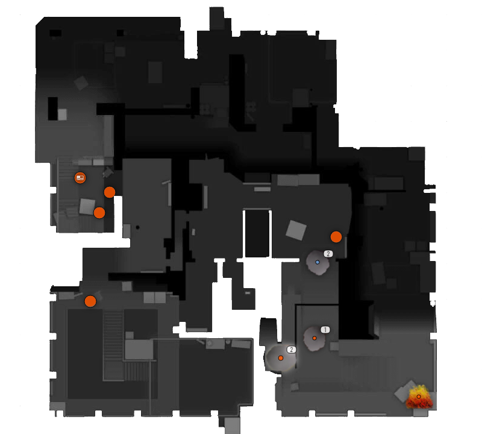
Цель — быстро и железно отжать нижку (лобби) на Б и решить: оставить здесь одного, остальным ретейкать рамп, либо выходить на Б. Играется, когда КТ очень сильно рейтит А-точку, постоянно стартует 2+ на А и тратит много гранат.
- Большинство: X+1 (люркер разворачивает команду или заходит в спину).
- Меньшинство: контактом в точку под пару гранат, либо крутануть через мид, если там скорее всего чисто.
Дефолт 1-4
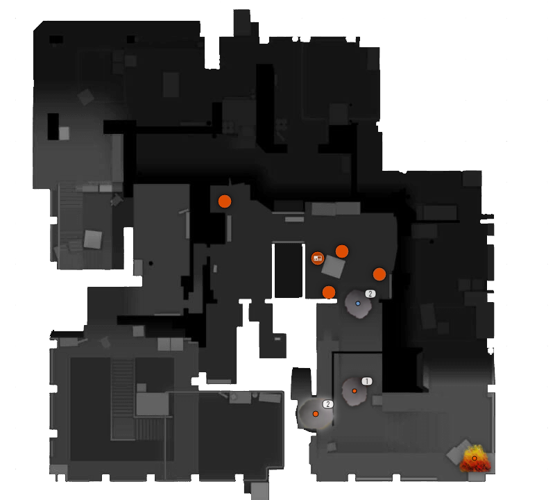
Люркер мид, или Б, или за рампой стоит в углу, а 4 человека занимают рамп.
- Большинство: закончить А, не торопясь всё отчекав.
- Меньшинство: контакт А в поиске рандомных дуэлей, либо крутануть через мид.
видео в оригинале
Роли с примерами игроков (бета-лекция 1)
К каждой роли в оригинале приложено видео с игроком-примером.
| Сторона | Роль | Задача | Пример |
|---|---|---|---|
| T | Мид-игрок | Контролировать пуш мида; доигрывать люрком в мид либо играть в точку с командой. | Spinx |
| T | AWP | Находить опены, забирать зоны, грамотно использовать гранаты, чтобы саппортить рифлам. | SunPayus |
| T | А-хелпующий | Колит и ведёт снайпера, вместе с люркером точки формирует тройку; чаще всего под А. | Snappi |
| T | А-люрк | Собирать информацию под А, отжимать зоны (с командой или соло), грамотно использовать гранаты; может доигрывать люрком. | Maden |
| T | Б-люрк | Информация под Б, не давать запушить точку; отжимать Б-лобби, доигрывать люрком либо играть в точку. | mezii |
| CT | А-опорник (рампер) | Законтрить пуш рампы и защитить свой плент; важно играть в паре с игроком гэпа. | flameZ |
| CT | А-хелпующий (гэп) | Помогать А-опорнику, который принимает главное решение. | apEX |
| CT | AWP | Скидывать стартовый смок на А и помогать на любой точке. Может стартовать где угодно, но нужен игрок, который вместо него даст стартовый смок под А. | SunPayus |
| CT | Мид-игрок | Законтрить пуш мида, помогать Б-опорнику; может сразу стартовать под Б, чтобы помочь с Б-плентом. | Spinx + mezii |
| CT | Б-опорник | Законтрить Б-пуш и защитить свой плент. | mezii |
видео в оригинале
ДЗ (бета-лекция 1): найти два дефолта; сдача через форму в профиле — hltv-ссылка, какой дефолт нашли и счёт.
Отличия в правилах (бета-лекция 2)
- Правила атаки #1–8 и защиты #1–6 совпадают с основным курсом.
- Защита #7 в бете: «Если под одной точкой агрессия, под другой надо играть в отдачу» (в основном курсе — «на удержание и сейв»).
- Правило Vertigo для атаки №1 сформулировано как «Защита играет 2–3 на А»; содержание пунктов а–в то же.
- ДЗ: найти момент, где не выполнено правило (2 примера); сдача — hltv-ссылка, какое правило не выполнено, таймкод.
Парные и соло комбинации (бета-лекция 3)
Смок и саппорт-флеш с Т-респы T
Поддержка для Нико-мува.
видео в оригинале
Нико-мув (А) T
Первый респ, дать смок, фокус на кран-пик и второй этаж; потом можно дать молик цемент и ловить фокус на выход с короткого, дальше по ситуации. Кидается саппорт-флеш с Т-респы.
видео в оригинале
Испанский мув (А) T
Короткий пуш под смок и флеш с лестницы.
видео в оригинале
Резкое занятие Б и продолжения T
Первый респ — дать флешку от себя, +2 флешки даёт саппорт. Продолжения: инста-буст дерево (на деревяшку) и буст слева.
видео в оригинале
Один нашивает, другой слушает (мид) T
Мид-игрок шьёт с ладдера, Б-игрок слушает результат; можно взять напарника.
видео в оригинале
Три буста на миду T
На железе (деф); под ящиком, почти в упор (деф); бразильский ран-буст на ящик.
видео в оригинале
Рефреш-мув (А) CT
Упасть вниз под деф-смок по респе + дать флеш под себя.
видео в оригинале
Врыв в короткий (G2-мув) под тикток-флеш CT
С отжатием рампы (2–3).
видео в оригинале
Резкий буст Guardian (Б) CT
Когда не успели занять нормальные споты и уже прилетает раскид.
видео в оригинале
Немига (Б) CT
Один падает под флеш на заборчик, второй — антифлеш, готов разменивать.
видео в оригинале
В паре под флеш вдвоём (Б) CT
С дефолта флеш, второй ретейкает.
видео в оригинале
Мув art'а с AWP (Б) CT
Видео в оригинале без текстового описания.
видео в оригинале
Подсадка на сигарете с AWP, чтобы убить мид CT
Когда плохой бай и есть только AWP. Можно играть 3А + 2Б, но лучше 2А + 3Б — чтобы один ждал упор либо сидел под смоком.
видео в оригинале
Пуш мида под 2 флешки CT
Мид, защита.
видео в оригинале
Буст вдвоём на миду CT
Мид, защита.
видео в оригинале
Соло-прожим под смок либо фейк-прожим CT
Мид, защита.
видео в оригинале
ДЗ: найти 2 парные комбинации на карте, по одной за каждую сторону (новые или такие же, как в лекции); сдача — HLTV-ссылка с трансляцией + таймкод раунда + описание.
Пост-плент. Execute (бета-лекция 4)

Самые популярные выходы — «скрипты», которые делают команды всех уровней; даны как пример последовательности действий для максимального эффекта.
1. А-выход по левой
- Занять рамп.
- Дать левый смок и молик гап.
- Большинству пойти в гап и после молика дойти до плента.
- Игроку на рампе играть мега осторожно и строго по информации, на размен.
Позиции: дефолт, стенка, гап, рамп, цемент. Для AWP: гап, рамп (2-й этаж).
видео в оригинале
2. А-выход под 2 смока
- Отдать 2 смока, молик 5.
- Зайти большинством через рамп и один через гэп. Гэп играет после того, как Т пройдут кран.
Позиции: дефолт, стенка, гап, цемент, 7-ка, 1, 2, жёлтый.
видео в оригинале
3. Б-выход
- Занять низ и выжечь крысюк (дерево).
- Дать правый смок, молик дефолт (обязательно).
- Смок левый и молик 3-ка (опционально).
- 1-й игрок по правой стенке выходит и пытается занять элек; 2-й играет по центру и старается дойти до дефолта; 3-й играет по дальней, доджит флешки; 4-й накидывает левые флешки над единицей.
- Пачка дефолт.
Позиции: элек смотрит себе влево; дефолт смотрит ему вправо; сигарета — анти-флеш; 1-ка или лестница. Для AWP: за 1, дефолт на крайняк.
видео в оригинале
4. Мид-Б (G2)
Стартуем тремя на мид. Один под Б: контролит под Б, ждёт тиммейта с А. Один под А: AWP либо рифлер, который создаёт звуки под А, даёт фейковые смоки, может позумить и выстрелить, после чего уходит под Б.
Мид-игроки:
- Додж халявного дамага на миду и врыва мид от КТ.
- Распикать мид (больше против AWP): а) один на широком, второй пикает, либо просто пик префом; б) сыграть на верочку под флеш; в) прошить с ладдера, Б-игрок слушает.
- Прочекать под ящиком, не открываясь слишком глубоко.
- Выход: 1-й кидает смок G2, потом давит в 9-ку; 2-й играет с первым на размен (бомба лучше у него); 3-й даёт флеш + молик в КТ; 4-й и 5-й играют в паре, закрывают Б в тайминг раскида на миду.
видео в оригинале
ДЗ: найти свою ошибку в пост-плент ситуации в своей игре на Vertigo (именно ошибку, не хайлайт; свою, не тиммейта); сдача — ссылка на FACEIT-матч + счёт.
Бета-записи: таймкоды
Лекция 1. Дефолт на Vertigo. Роли (25 февраля)
| Время | Тема |
|---|---|
| 0:00 | Начало |
| 1:52 | Вступление от Олега |
| 10:29 | Приветствие Никиты Дадте |
| 12:53 | Начало лекции. Дефолт |
| 13:29 | Что такое Дефолт |
| 14:04 | Три элемента Дефолта |
| 16:20 | Два типа Дефолта |
| 16:33 | Обычный Дефолт |
| 17:08 | Агрессивный Дефолт |
| 18:19 | Дефолты |
| 19:19 | Что значат цифры Дефолта |
| 19:41 | Дефолт 1-1-3 |
| 24:54 | Дефолт 3-1-1 |
| 27:05 | Фишка от Дадте |
| 28:59 | Дефолт 1-4 |
| 33:05 | Роли. Вступление |
| 36:20 | Атака. Мид игрок |
| 39:40 | Атака. AWP |
| 42:33 | Атака. AWP. Фишка |
| 43:31 | Атака. Роли под А |
| 44:19 | Атака. А хелпующий |
| 45:07 | Атака. Смок рамп |
| 46:54 | Атака. А игрок |
| 48:23 | Атака. Б игрок |
| 50:14 | Перерыв |
| 51:24 | Ответы на вопросы |
| 57:20 | Защита |
| 58:10 | Защита. А опорник |
| 1:01:49 | Защита. А хелпующий / Гап игрок |
| 1:03:14 | Защита. АWP |
| 1:06:55 | Защита. Мид игрок |
| 1:09:06 | Защита. Б опорник |
| 1:11:10 | Домашее задание |
| 1:12:11 | Вопросы |
| 1:19:11 | Олег отвечает |
Лекция 2. Общие правила. Правила Vertigo (3 марта)
| Время | Тема |
|---|---|
| 0:00 | Начало |
| 0:08 | Вступление |
| 1:32 | Начало лекции. Общие правила |
| 2:32 | Правило атаки #1 |
| 3:46 | Правило атаки #2. Пример Insilio |
| 6:57 | Правило атаки #3 |
| 8:53 | Правило атаки #4 |
| 9:51 | Правило атаки #5 |
| 11:09 | Правило атаки #6 |
| 12:44 | Правило атаки #7 |
| 14:21 | Правило атаки #8 |
| 15:39 | Правила защиты |
| 16:11 | Защита #1. Последний смок всегда на бомбу |
| 18:42 | Защита #2. В ситуации 2в1 не разделяться |
| 19:49 | Защита #3. Инициатива у большинства |
| 20:11 | Как играть "противно" |
| 21:25 | Защита #4. Вставка из фильма об Insilio |
| 24:27 | Защита #5. В большинстве играть от зон "на верочку" |
| 26:20 | Защита #6. Играем против +W чудаков |
| 27:56 | Защита #7. Если под одной точкой агрессия, под другой надо играть в отдачу. |
| 30:38 | Правила на Vertigo |
| 30:45 | Атака. Защита играет 2-3 на А и вначале кидают много гранат |
| 31:30 | Пункт А. Должны переиграть смоками |
| 32:40 | Пункт Б. Что необходимо, чтобы отжать рампу? |
| 34:33 | Пункт В. Не стоять три А под смоком |
| 36:26 | Атака. Когда отжимаем рампу под А (про цемент) |
| 39:09 | Защита. Слушать звуки за КТ |
| 41:53 | Защита. Как происходит сбор информации под А |
| 42:46 | Сбор инфы, когда на карте тишина |
| 43:10 | Сбор инфы, когда нас много под А |
| 43:27 | Сбор инфы, когда нас меньшинство |
| 46:02 | Защита. Нельзя драться соло в кровь за рампу |
| 48:13 | Защита. Если атака делает СПЛИТ на миду (G2) |
| 49:29 | Защита. Б-опорнику |
| 50:24 | Защита. Если вы играете дефолт 2-1-2 |
| 50:49 | Защита. Атака часто играет контактом мид, либо Б |
| 51:51 | Домашнее задание |
| 52:58 | Новости Insilio |
| 54:34 | Ответы на вопросы |
| 55:16 | О турнире школы после обучения |
| 56:29 | Еще вопросы |
Лекция 3. Парные и соло комбинации (10 марта)
| Время | Тема |
|---|---|
| 0:00 | Начало |
| 0:18 | Вступление |
| 01:59 | Начало лекции |
| 04:31 | Атака на А. Niko-мув |
| 05:57 | Смок и сапорт-флеш с Т-респы |
| 07:07 | Атака на А. Испанский мув |
| 08:45 | Атака на Б |
| 09:00 | Атака на Б. Инста буст дерево |
| 10:19 | Как это контрить за КТ? |
| 11:22 | Атака на Б. Буст слева |
| 12:03 | Атака на Миду. Один нашивает, другой слушает |
| 14:31 | Три буста на миду |
| 14:47 | Буст на железяке |
| 15:02 | Буст на ящике |
| 15:16 | Бразильский ран-буст |
| 16:16 | Как часто и когда используются мувы атаки |
| 18:19 | Защита А. Рефреш мув |
| 18:58 | Почему не делать против эко и форса |
| 19:35 | Защита А. Врыв короткий под тикток флеш с отжатием рампы |
| 24:02 | Защита Б. Резкий буст гвардиан |
| 25:41 | Защита Б. Немига |
| 27:07 | Защита Б. В паре под флеш вдвоём |
| 27:39 | Защита Б. Мув для AWP art'а |
| 28:17 | Подсадка на сигарете c AWP. Мув на игру у Инсилио |
| 29:28 | Защита мида. Пуш под 2 флешки |
| 30:27 | Защита мида. Буст вдвоём на миду |
| 31:12 | Защита мида. Соло прожим под смок, либо фейк прожим |
| 33:18 | Домашнее задание |
| 33:42 | О второй части лекции. Стрейфы и пики |
| 34:38 | Ответы на вопросы |
Лекция 3.1. Стрейфы. Пики (16 марта)
| Время | Тема |
|---|---|
| 0:00 | Начало |
| 00:21 | Что такое стрейф |
| 00:55 | Контрстрейф |
| 02:40 | Микро стрейфы |
| 03:26 | Самый крутой игрок по стрейфам |
| 03:49 | Лонгстрейф |
| 05:10 | Хантарес пик |
| 06:07 | Ax1lе дакшот |
| 07:37 | Пики против AWP |
| 08:29 | Как не надо пикать |
| 08:47 | Как надо пикать |
| 09:35 | Грамотный распик |
| 11:24 | Риски при распиках |
| 11:30 | 1. Оружие |
| 12:05 | 2. Время |
| 13:13 | 3. ХП |
| 14:44 | Комментарии к видео-примерам распиков |
| 16:03 | Заключение. Мотивация это практиковать |
Лекция 4. Постплент. Execute (16 марта)
| Время | Тема |
|---|---|
| 0:00 | Начало |
| 00:02 | Вступление |
| 00:53 | Выход под А |
| 01:24 | 1. А выход по левой |
| 02:47 | Ошибка, за которую выгонят из команды |
| 04:54 | 2. А выход под 2 смока |
| 07:25 | Б выход |
| 12:47 | Выход через мид на Б (G2) |
| 15:10 | Когда отменить (переиграть) раунд |
| 16:08 | Сам выход |
| 18:56 | Заключение. Что самое важное |
| 19:36 | Домашнее задание |
| 21:06 | Об ответах на вопросы по лекциям |
Турнир Insilio BETA (31 марта)
| Время | Тема |
|---|---|
| 0:00 | Начало |
| 7:28 | Обращение Олега |
| 9:29 | Modjoo vs MN. Ножи |
| 12:50 | Modjoo vs MN. Пистолетка |
| 42:40 | Modjoo vs MN. Последний раунд |
| 51:52 | Sekdet vs Croco. Ножи |
| 59:10 | Sekdet vs Croco. Пистолетка |